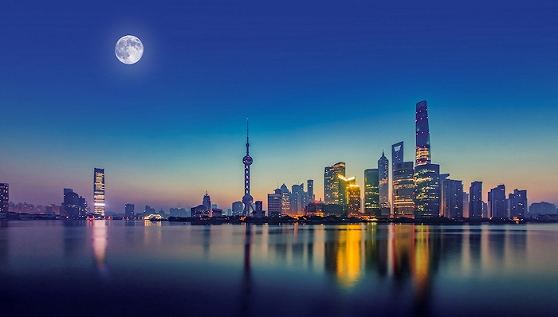

2021年1月24日，上海市十五届人大五次会议在世博中心开幕。市长龚正作政府工作报告。
到2025年，上海贯彻落实国家重大战略任务取得显著成果，城市数字化转型取得重大进展，国际经济、金融贸易、航运、科技创新中心核心功能迈上新台阶，人民城市建设迈出新步伐，城市核心功能更加强大，人民群众生活更有品质，城市精神品格更加彰显，生态环境质量更为优良，超大城市治理更加高效，谱写出新时代“城市，让生活更美好”的新篇章。
围绕目标《纲要（草案）》，上海提出了今后五年经济社会发展的主要任务。
在全力优化战略布局，服务构建新发展格局方面，上海将加快形成长三角一体化发展格局，紧扣“一体化”和“高质量”两个关键，强化制度创新，深化区域合作，为构建新发展格局作贡献。加快构建“中心辐射、两翼齐飞、新城发力、南北转型”的空间新格局，提升主城区服务能级和辐射功能，充分发挥东西两翼的自贸试验区临港新片区、长三角生态绿色一体化发展示范区、虹桥商务区对内对外开放枢纽作用，把嘉定、青浦、松江、奉贤、南汇五个新城打造成独立的综合性节点城市，推动南北两端的宝山、金山功能布局调整和经济结构升级，推进崇明世界级生态岛建设和长兴岛海洋产业发展。
上海将强化高端产业引领功能，按照“高端、数字、融合、集群、品牌”的产业发展方针,推动集成电路、生物医药、人工智能三大先导产业规模倍增，加快发展电子信息、汽车、高端装备、先进材料、生命健康、时尚消费品六大重点产业,大力推进经济数字化、生活数字化、治理数字化。强化开放枢纽门户功能，构建更高水平开放型经济新体制，建设各类有形、无形网络通道，更好促进国内国际两个市场、两种资源联动流通。